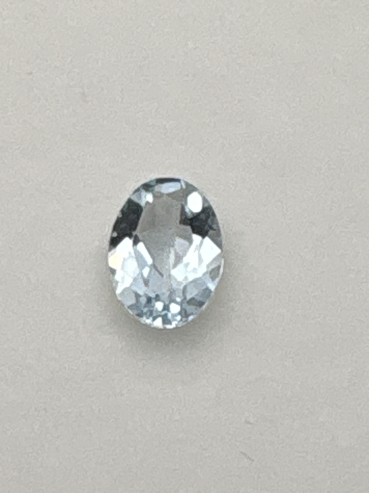

The Gem Drawer › No. 48

A very pale blue oval aquamarine, no weight given on the label.
| Catalogue no. | #48 |
|---|---|
| As labeled | Aquamarine |
| Shape / cut | Oval |
| Weight | Not recorded |
| Measurements | Not recorded |
| Colour | Very pale blue |
| Clarity / condition | Not recorded |
Interested in this stone, or in the collection as a whole? Terry VanWormer can answer questions about it.
Click here to inquireor email Terry directly at maxrebo34@gmail.com